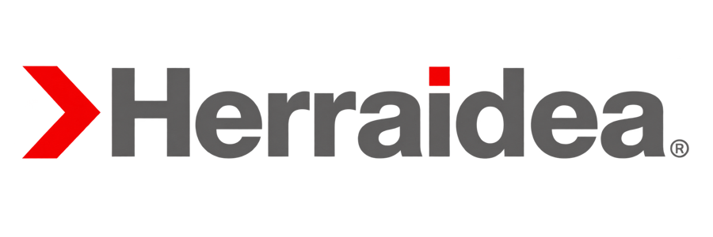
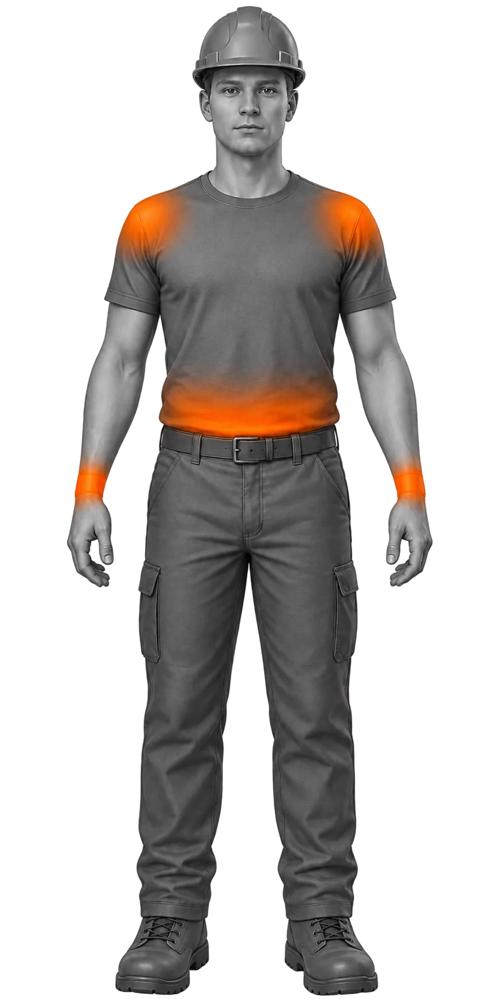
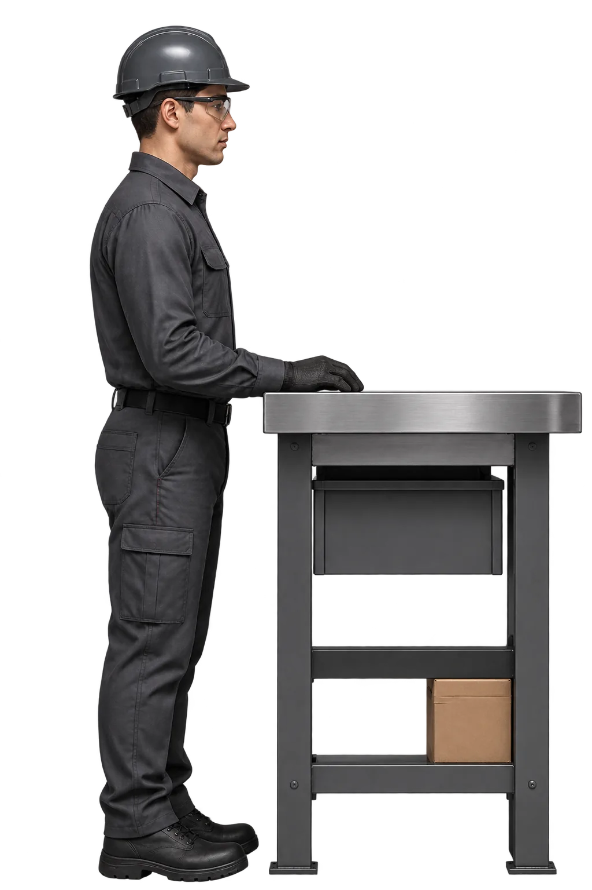
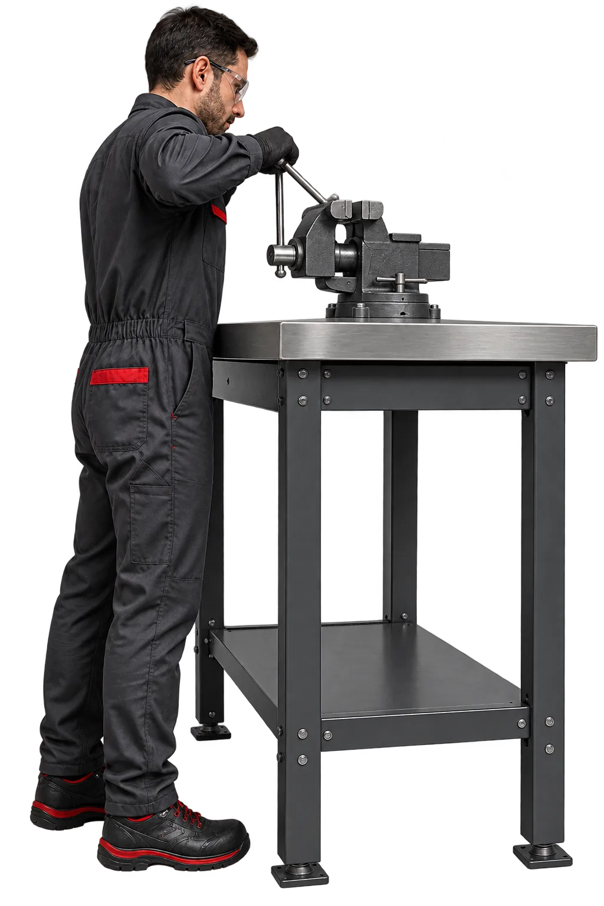
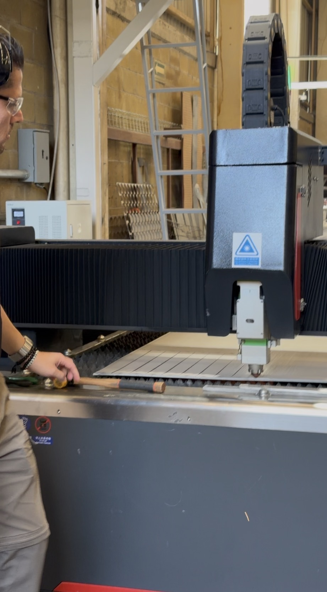
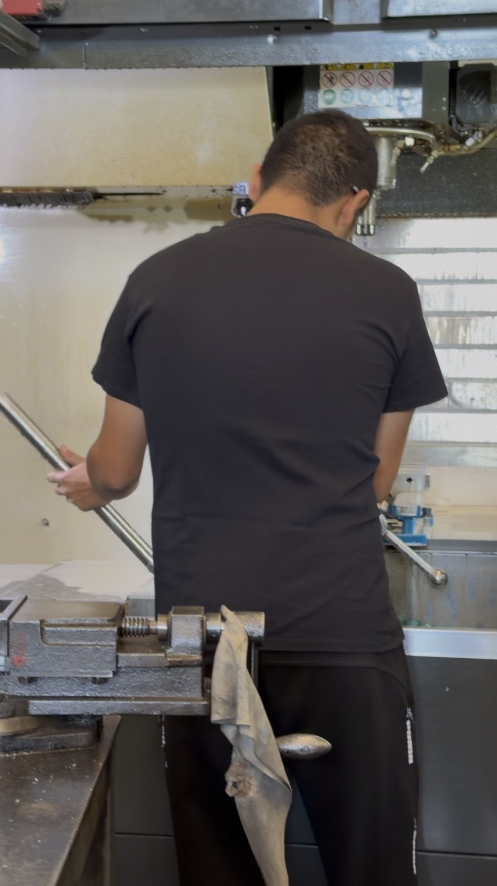
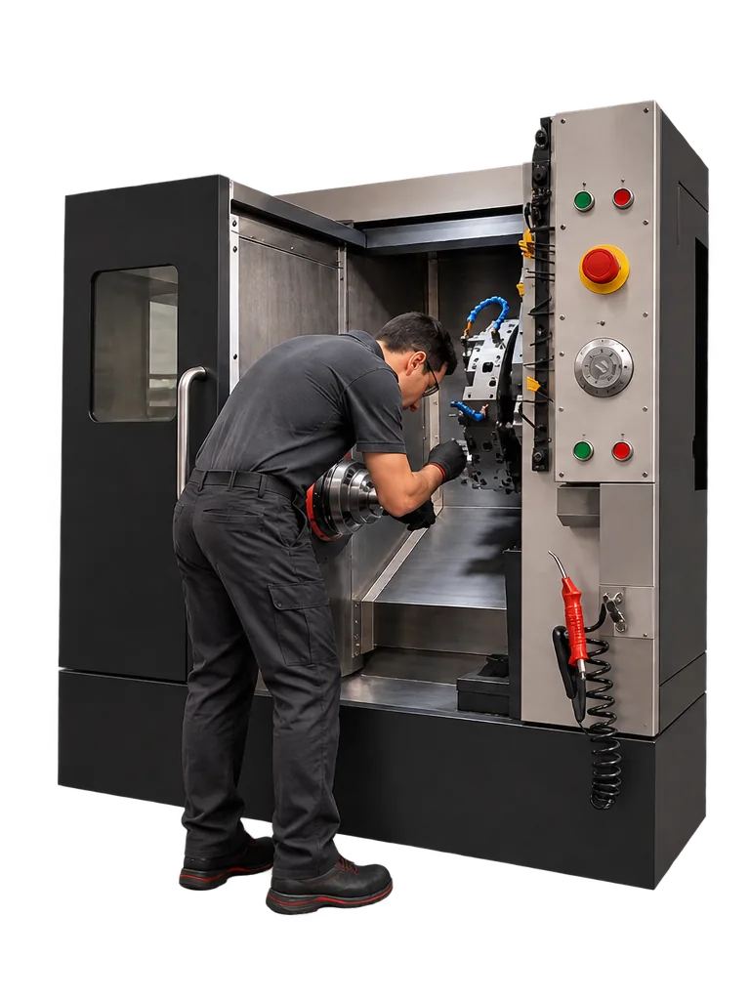
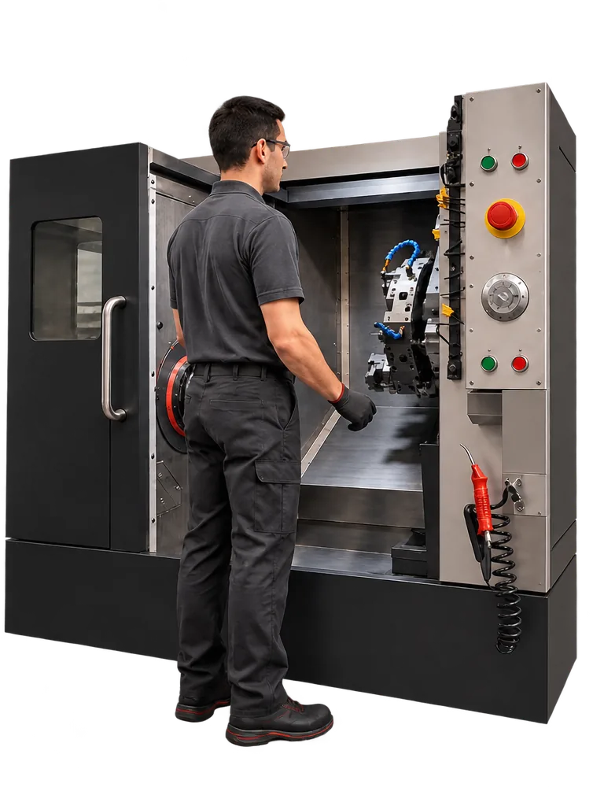
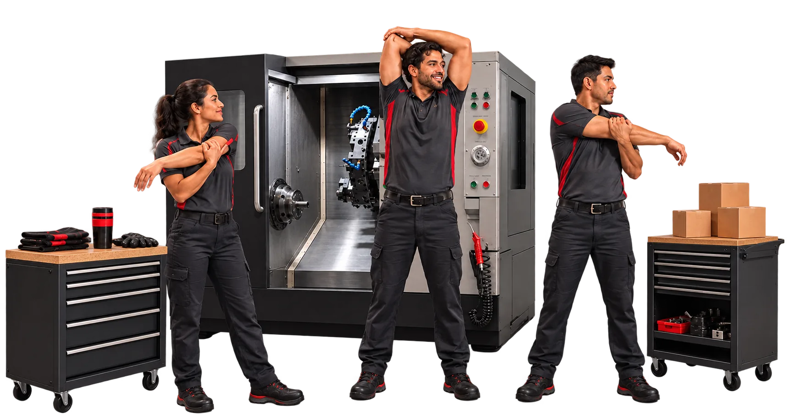

ErgonomíaDiagnóstico ergonómico de un taller metalmecánico de alta precisión en León, Guanajuato, y propuesta de rediseño de sus estaciones de trabajo.
Este trabajo presenta la evaluación y el diagnóstico ergonómico de la empresa Herraidea, ubicada en León, Guanajuato, dedicada a la fabricación y maquinado de componentes metálicos de alta precisión.
A partir de los principios de ergonomía física, cognitiva y organizacional, junto con la antropometría y la normatividad mexicana e internacional (ISO 26800 e ISO 6385), se analizan los puestos de trabajo del taller para identificar riesgos musculoesqueléticos, cargas de trabajo y oportunidades de mejora continua que favorezcan la salud, la seguridad y la productividad operativa.
Herraidea es una empresa enfocada en soluciones para cada proyecto, no solamente en la venta de herrajes estándar.
Cuenta con centros de maquinado y capacidad de fabricación propia, por lo que puede diseñar y fabricar herrajes en medidas especiales de acuerdo con planos, fotografías, dibujos, muestras o necesidades específicas del cliente.
Sector metalmecánico: manufactura de piezas mecánicas, maquinados CNC (torno y fresado en centros verticales), corte láser de lámina, ajuste de banco y ensamble.
Componentes metálicos industrializados y maquinados de precisión —barras, flechas y piezas cilíndricas— además de placas y perfiles cortados por láser.
Hecho en México · Herrajes inoxidables y componentes maquinados
En la observación de las operaciones del taller se evidencia la manipulación constante de barras y piezas metálicas pesadas, la carga manual hacia prensas y morsas en los centros de maquinado Haas, posturas de bipedestación prolongada con inclinación del tronco y movimientos repetitivos durante la sujeción de herramientas y el rebarbado.
El área requiere un análisis detallado para prevenir lesiones dorsolumbares y desórdenes musculoesqueléticos en las extremidades superiores.
Bipedestación prolongada con inclinaciones del tronco al colocar piezas pesadas en el centro de maquinado Haas y en los tornos.
Levantamiento manual de barras sólidas metálicas y estiba en contenedores inferiores, sin equipos de asistencia para la carga.
Accionamiento constante de palancas en tornillos de banco, limpieza con aire comprimido, carga/descarga repetitiva y contacto continuo contra la rueda abrasiva en pulido.
Tapetes antifatiga en las estaciones principales; llaves manuales, pistolas neumáticas y un brazo articulado FlexArm para roscado montado en el banco.

Monitoreo visual constante de las trayectorias de herramienta y de los parámetros de corte (código G) en los paneles CNC.
Supervisión visual del corte láser para prevenir colisiones o fallas en el material.
Paneles de control Haas con botones mecánicos e indicación de paro de emergencia.
Riesgo de fatiga mental o distracción durante los ciclos largos de corte automatizado, que afecta el tiempo de respuesta ante alertas o averías.
El operador decide en tiempo real si continuar, pausar o detener el ciclo ante vibraciones anómalas o alertas del centro Haas. Exige criterio técnico bajo presión de tiempo; una carga mental elevada puede derivar en decisiones tardías o errores de operación.
Tareas divididas en preparación de material, montaje, ajuste manual y maquinado automatizado.
Turnos continuos de taller, con ventiladores industriales de pedestal y extractores de muro para mitigar el estrés térmico en el piso de producción.
Coordinación directa entre operadores de CNC, preparadores y personal de logística del taller.
La cultura de seguridad consolidada sostiene la operación, pero la falta de rotación de tareas en el banco de ajuste y rebarbado puede generar fatiga acumulada hacia el final del turno, incrementando el riesgo de errores de calidad y reduciendo la productividad por hora.
Con la superficie del banco a la altura del codo, el brazo trabaja pegado al cuerpo y el hombro permanece relajado: el plano óptimo de referencia para ISO 14738.

Montada sobre la mesa, la morsa desplaza la tarea por encima del plano del codo y obliga a abducción y elevación de hombro en cada apriete, sobre todo en operadores de menor estatura.

Los bancos de acero son de altura fija y la morsa montada sobre la mesa eleva el punto de sujeción de la pieza aproximadamente 15–20 cm. Esto sitúa la tarea por encima del plano óptimo del codo y obliga a abducción y elevación de hombro durante el ajuste manual, sobre todo en operadores de menor estatura.
Las piezas cilíndricas maquinadas se colocan de pie sobre mesas bajas y en contenedores inferiores, lo que obliga a flexionar el tronco de forma repetida para tomarlas.
Las alturas estandarizadas de mesas, tornos y consolas exigen flexión de tronco en operadores altos e hiperextensión de brazos en operadores bajos.
Conviene ajustar la altura de contenedores y mesas auxiliares para mantener el agarre dentro del plano óptimo de trabajo —entre la cadera y el pecho— acomodando del percentil 5 al 95 de la población laboral.
Factores de riesgo ergonómico en el trabajo. Parte 1: manejo manual de cargas.
Norma ergonómica de aplicación directa: rige la manipulación de barras y piezas metálicas en el taller.
Manejo y almacenamiento de materiales; condiciones de seguridad y salud en el trabajo.
Aplica al manejo de materiales y estiba en almacén y banco.
Equipo de protección personal: selección, uso y manejo en los centros de trabajo.
Respalda el uso de lentes, protección auditiva y calzado observado en el taller.
La NOM-028-STPS regula la seguridad en procesos y equipos críticos que manejan sustancias químicas peligrosas, ajena al giro y a los riesgos ergonómicos del taller metalmecánico. Se documenta su no pertinencia para este caso y se prioriza la NOM-036-1-STPS como norma ergonómica directa.
| Aspecto | ISO 26800:2011 | ISO 6385:2016 |
|---|---|---|
| Objetivo principal | Marco conceptual general de principios ergonómicos aplicable a cualquier producto, sistema o servicio. | Principios específicos para diseñar sistemas de trabajo seguros, saludables y eficientes. |
| Enfoque | Visión global y conceptual, aplicable a cualquier contexto (industrial, doméstico, público). | Operativo, centrado en tareas, herramientas, equipo y condiciones del puesto. |
| Alcance | Abarca factores humanos, ambientales y organizacionales de manera general. | Se limita a sistemas de trabajo y condiciones laborales seguras y eficientes. |
| Principios clave | Compatibilidad persona-sistema, prevención antes que corrección, mejora continua centrada en el usuario. | Adaptación del trabajo a la persona, integración del factor humano, optimización de condiciones físicas y cognitivas. |
| Factores considerados | Antropometría, biomecánica, ergonomía cognitiva, factores ambientales, organización del trabajo. | Posturas, movimientos, fuerzas, carga física y mental, riesgos laborales, pausas y recuperación. |
Lectura para Herraidea: la ISO 26800 justifica por qué se realiza el análisis —marco de principios— y la ISO 6385 guía cómo se rediseñan en concreto las estaciones de maquinado CNC y el banco de trabajo.

Evidencia 1
Evidencia 2Seis intervenciones sobre las estaciones de maquinado CNC y el banco de ajuste, cada una ligada al hallazgo que la origina.
El operador inclina el tronco y adelanta los hombros para alcanzar la pieza dentro del centro de maquinado: carga dorsolumbar sostenida y elevación de hombro en cada montaje.

Con la pieza acercada al plano del codo y asistencia mecánica para la carga, el operador trabaja de pie con columna neutra y brazos dentro del alcance óptimo.

Levantamiento manual de barras sólidas metálicas hacia prensas y morsas del centro Haas, sin equipo de asistencia.
Polipasto ligero o brazo de carga sobre los centros Haas —distinto del FlexArm existente, que es de roscado— para eliminar el levantamiento manual de barras de gran peso.
Piezas cilíndricas en mesas bajas y contenedores inferiores: flexión de tronco repetida en cada toma.
Mesas de tijera regulables que elevan los contenedores al plano óptimo entre cadera y pecho, evitando la flexión frecuente de columna.
La morsa sobre el banco fijo eleva la sujeción por encima del plano óptimo: abducción y elevación de hombro en cada ajuste.
Revisión de la altura de bancos y morsas para acercar la tarea al codo, acomodando del percentil 5 al 95 conforme a ISO 14738 y EN 547.
Parte de las estaciones de bipedestación prolongada quedan sin superficie antifatiga.
Cobertura de todas las estaciones de bipedestación prolongada para reducir la fatiga en miembros inferiores.
Ciclos largos de corte automatizado con atención sostenida: fatiga mental y tiempos de respuesta más lentos ante alertas.
Programa de pausas activas de 5 minutos por cada 2 horas de trabajo repetitivo o de supervisión continua.
Sin rotación de tareas: fatiga acumulada hacia el final del turno y mayor riesgo de errores de calidad.
Rotación entre banco de ajuste, rebarbado y montaje para distribuir la carga repetitiva a lo largo del turno.
Rutina breve de movilidad de hombro, muñeca y columna en el propio puesto, dirigida al personal de maquinado CNC, banco y rebarbado. Interrumpe la bipedestación prolongada y la repetitividad antes de que la fatiga se acumule al final del turno.

El análisis ergonómico integral en Herraidea permite identificar que, si bien la empresa cuenta con tecnología de punta en maquinado CNC y corte láser y con una cultura de seguridad consolidada —EPP, protección auditiva y tapetes antifatiga—, persisten áreas de oportunidad clave en el manejo manual de cargas, las posturas en bipedestación y la adaptación antropométrica de las estaciones auxiliares.
La alineación con la NOM-036-1-STPS y con los estándares ISO 26800 e ISO 6385 no solo previene trastornos musculoesqueléticos en los operadores: reduce la fatiga mental y optimiza los tiempos de ciclo y la productividad general del taller.